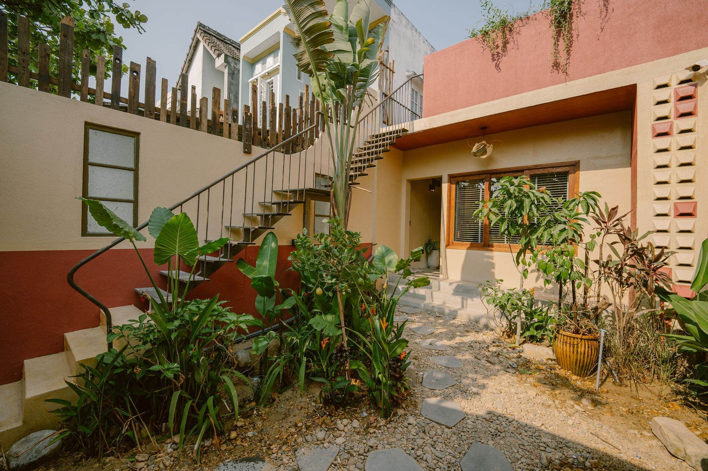
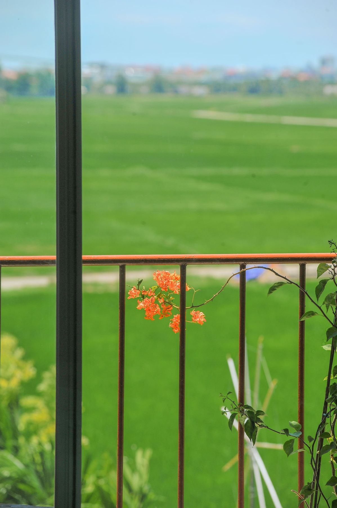
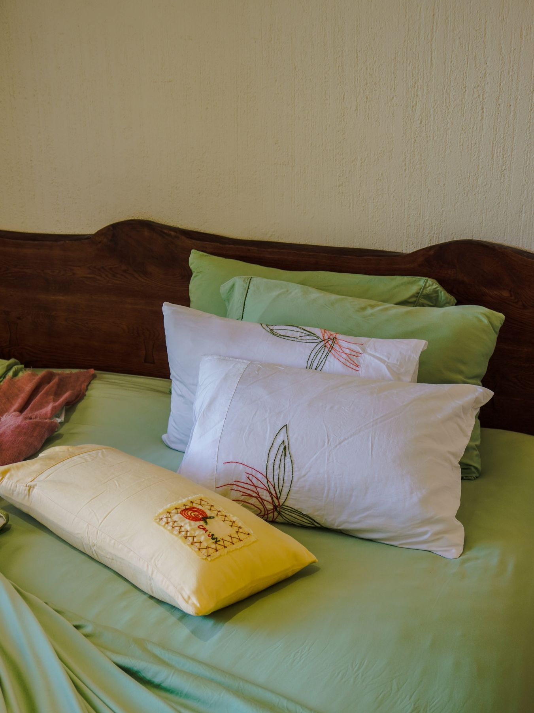
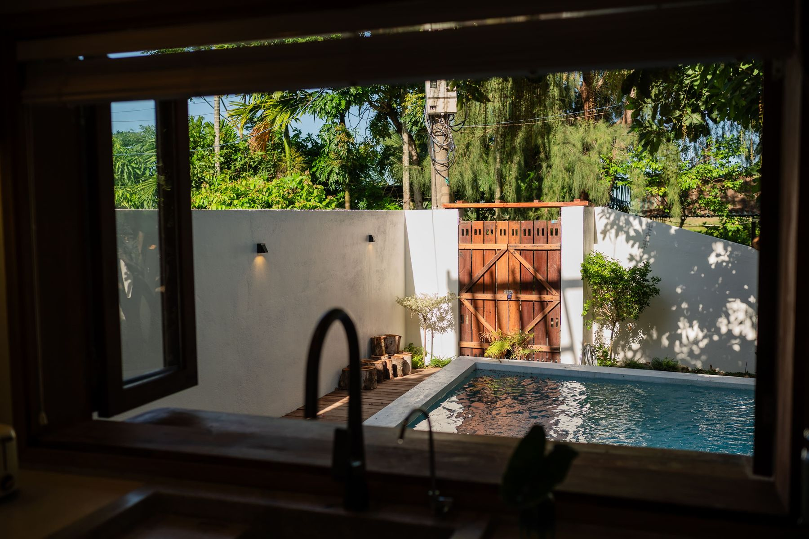
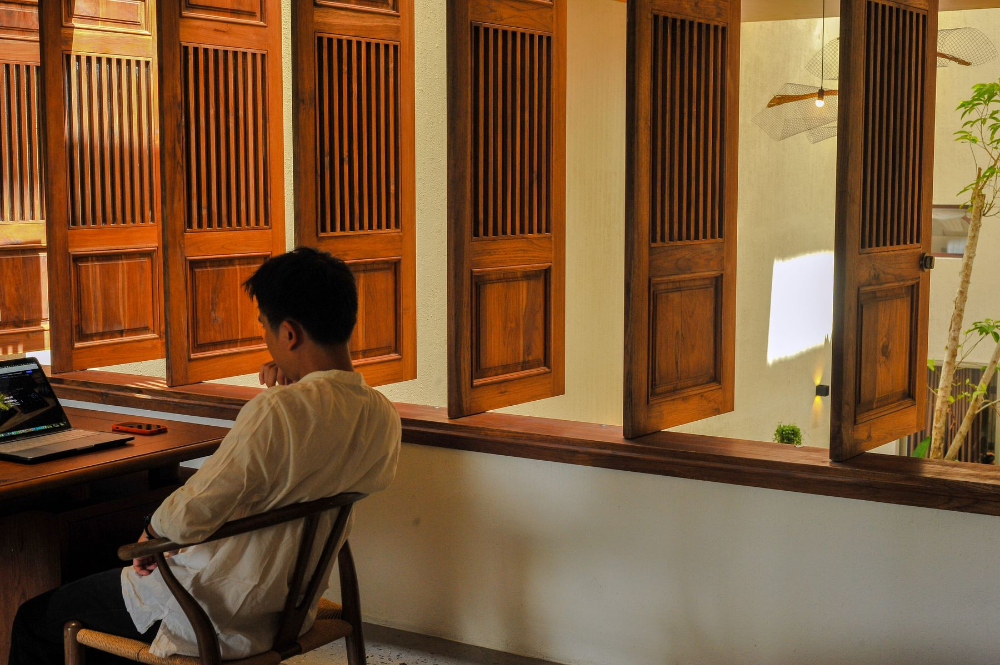
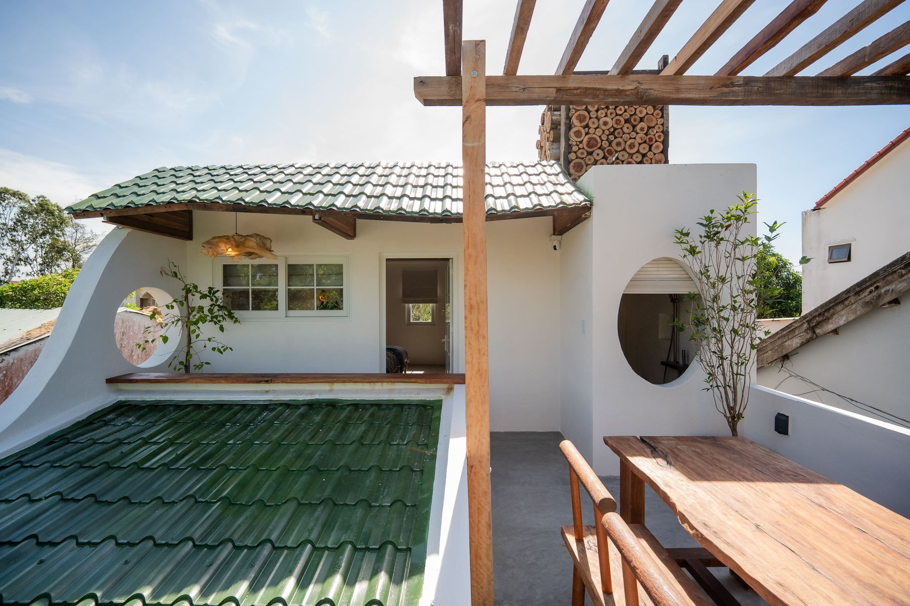
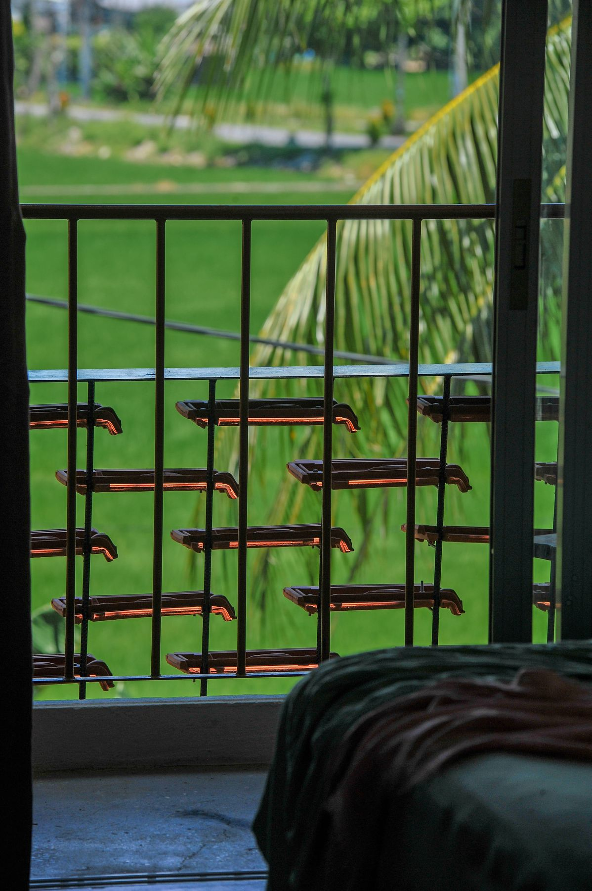
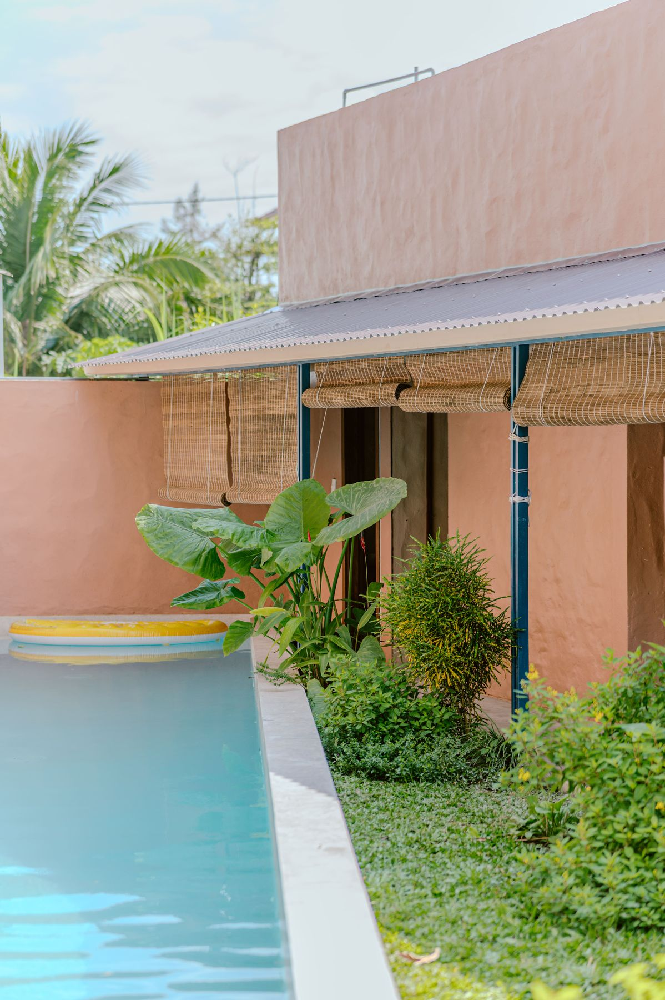
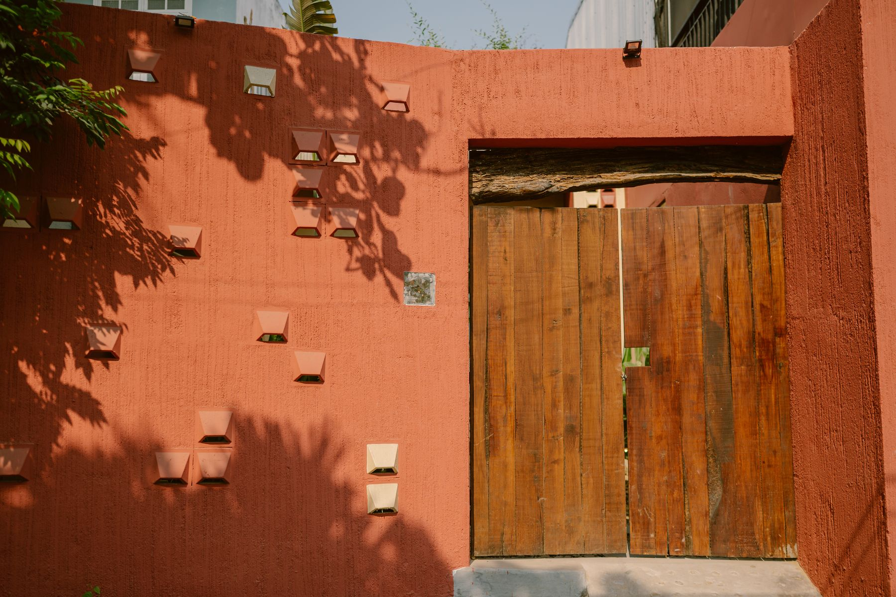

Riêng tư
Villa nguyên căn, hoặc những tòa nhà nhỏ chỉ vài căn, mỗi căn một lối vào. Không sảnh đông, không ồn ào — ngôi nhà như của riêng bạn.
“sáng đạp xe qua đồng lúa, trưa ngủ trên ga lụa tre, chiều ngắm hoàng hôn từ ban công — mỗi ngôi nhà của mô giữ một nhịp sống chậm của hội an”
Bốn ngôi nhà, bốn cách sống chậm
Điều mọi ngôi nhà Mô đều giữ

Villa nguyên căn, hoặc những tòa nhà nhỏ chỉ vài căn, mỗi căn một lối vào. Không sảnh đông, không ồn ào — ngôi nhà như của riêng bạn.

Đồng lúa, hồ sen, biển. Xe đạp trước cửa, bếp để nấu, máy giặt ngay trong căn — để ở một tuần, một tháng, hay lâu hơn.

Mọi chiếc giường đều trải chăn, ga, gối lụa tre do chính xưởng Mô Bedding thiết kế — mát, mềm, càng giặt càng êm.
Một cuối tuần, hay cả một mùa

Theo đêm
Từ 1 đêm ở Nhà Sen, Nhà Biển; 2 đêm ở CamF, Nhà Trầu. Nhận phòng sau 14:00, trả phòng trước 12:00.
Tìm hiểu
Theo tháng
1–3 tháng hoặc lâu hơn, có dọn phòng và thay ga khăn mỗi tuần. Bếp, máy giặt, máy sấy riêng trong từng căn — hợp người làm việc từ xa và gia đình.
Tìm hiểuNgủ trên ga gối Mô
Ngay trước cửa nhà

Từ Nhà Sen đi bộ ra làng rau hữu cơ nổi tiếng nhất Hội An. Học một lớp nấu ăn, hay làm nông dân một buổi sáng.

Xe đạp miễn phí ở CamF. Mười phút băng qua đồng là tới phố cổ, rừng dừa Bảy Mẫu hay các làng nghề.

Từ Nhà Biển, 100 mét là tới bãi cát và những quán hải sản. Sáng tắm biển, chiều bơi trong hồ của riêng mình.
Chúng tôi hỗ trợ thêm: đưa đón sân bay Đà Nẵng · thuê xe máy · đặt tour · dọn phòng thêm — cứ nhắn là có.
Khách nói gì về Mô

Về chúng tôi
Mô Đi Phê là một thương hiệu nhỏ về lối sống chậm, sinh ra ở Hội An. Bên cạnh Mô Bedding, chúng tôi chăm chút một vài ngôi nhà ở những nơi mình thương nhất — đồng lúa Cẩm Châu, vườn rau Trà Quế, biển An Bàng.
Bạn đặt trực tiếp với chúng tôi: không qua phí sàn, có người thật trả lời Zalo, WhatsApp bất kể giờ nào, và một ngôi nhà được dọn, được trải giường, được chăm như nhà của chính mình.
Trò chuyện với chúng tôiGiá: liên hệ
Chúng tôi báo phòng trống và giá trong vài phút — theo đêm hay theo tháng.